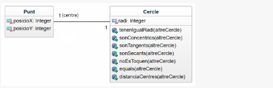

Hacer una aplicación en la que el usuario introduce las coordenadas X, Y de dos círculos y sus respectivos
radios.
A.Crear la clase Punto y la clase Círculo:

| Centro (x) | Centro (y) | Radio (r) | ||
|---|---|---|---|---|
| Círculo 1 | ||||
| Círculo 2 |
Con los datos proporcionados por el/la usuario/a:
podemos obtener la siguiente información:
Método: fórmula de distancia entre dos puntos.
Dos círculos son iguales si tienen el mismo centro y el mismo radio.
Dos circulos son CONCENTRICOS si tienen igual centro.
Dos círculos son TANGENTES (sólo se tocan en un sólo punto) si la distancia entre sus centros es igual a la suma de sus radios
Dos círculos son SECANTES (se tocan en dos puntos) cuando la distancia entre sus centros es menor que la suma de sus radios*.
Dos círculos NO SE TOCAN si la distancia entre sus centros es mayor a la suma de sus radios*.
*Nota: Si las circunferencias son concéntricas NO SE TOCAN (y por tanto, tampoco pueden ser secantes)
aún cuando la distancia entre sus centros (0) sea menor que la suma de sus radios